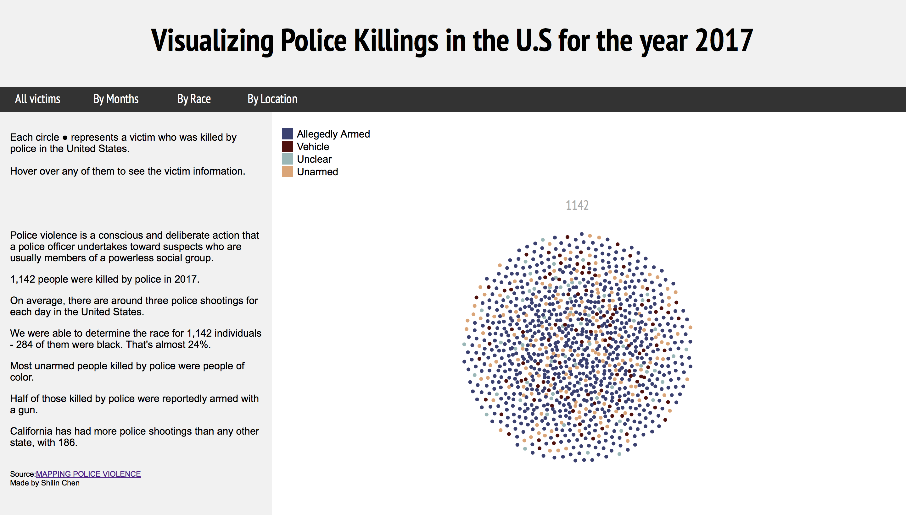

Visualizing Police Killings in the U.S for the year 2017
警察暴力执法一直是美国社会中存在的一个社会问题，本作品通过数据分析，从时间，种族，地点三个方面来探讨2017年美国警察暴力执法致死的情况。

DACA MIGHT BE ENDING SOON. HERE'S WHY YOU SHOULD CARE（网页版）
特朗普宣布废除移民特别保护项目“童年抵美者暂缓遣返（DACA）”计划，这让许多在美的非法移民学生都对自己的未来产生担忧，本篇文章通过采访讲述他们的心声并描写了DACA计划产生到废除的具体过程。